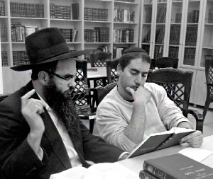

Making Connections and Saving Souls
ELIYAHU HANAVI IN RAMAT AVIV

On one of those Fridays, feeling helpless, we jokingly said that although it was hard to find people in such a secular neighborhood willing to put on t’fillin, the day would come when people would be so eager to do so that they would chase after us and want to pay us for it. We laughed about how we would make all kinds of sales like two for one, etc.
The following Friday we were standing at our t’fillin stand as usual when a luxury car stopped near us and a bareheaded, elegantly dressed man emerged. He put his hand in his pocket and took out a wad of hundred dollar bills. He came over to us and gave each of us a hundred dollar bill and said, “I want to give this money to you because you put t’fillin on with people; continue what you’re doing.” He told us that the money was for us and not for tz’daka. We stood there open-mouthed. This was not an everyday occurrence!
After we had recovered somewhat, we tried finding out who this anonymous millionaire was, but he refused to disclose details and he graciously departed. He got into his car and disappeared. We could only suspect that he was Eliyahu HaNavi who had come to encourage us and to validate our dream that one day Jews would appreciate this important mitzva.
SKEPTICS TURNED BELIEVERS
One of the bachurim in the yeshiva in Ramat Aviv would go fishing on Friday afternoon. He was once sitting there and fishing on a nearby beach when he met two religious bachurim from Yerushalayim about 19 years of age. As it grew late, he knew they would not have enough time to return to Yerushalayim before Shabbos. He invited them to spend Shabbos at the yeshiva.
We hosted them in our house for the Shabbos meal. We discussed writing to the Rebbe through the Igros Kodesh. The two bachurim were skeptical about it but eventually expressed their interest, if only out of curiosity, to try their luck. I guided them in how to go about it.
On Motzaei Shabbos there was a knock at the door and the two bachurim came in. The first one said that he really wanted to get married and that is what he wanted to write to the Rebbe. When he opened a volume of Igros Kodesh, the letter was a bracha for a wedding in a good and auspicious time. He was thrilled and amazed by the precise answer.
The other bachur did not say what he was writing about, but after he opened the volume of Igros Kodesh he was disappointed not to see an answer to his question. I suggested that he make a hachlata tova (positive commitment), write that to the Rebbe, and open again. He did so and when he opened the Igros again he was astounded by what he read. This time, he said, the Rebbe had responded directly to his question. When he continued reading the letter until the end, he turned pale. When he had calmed down, he confessed that for a while he had not been putting on t’fillin in the morning before going to work as a teacher. His hachlata tova had been to be more particular about putting on t’fillin. What had the Rebbe written at the end of the letter? About the importance of putting on t’fillin!
A month later, the second bachur called to invite me to the wedding of the first bachur who had asked for a bracha to get married.
IT BEGAN WITH A LOST KEY
After finishing a year of Kollel in the yeshiva in Ramat Aviv, I worked on Mivtza T’fillin and Mezuzos in the neighborhood. Checking t’fillin and mezuzos is a wonderful way to make connections and be mekarev people. Checking mezuzos is an opening to a relationship that sometimes continues with writing to the Rebbe through the Igros Kodesh, miracles, and increased religious observance. That is what happened in these next two stories:
One day, a physics student at Tel Aviv University met me at the entrance to the yeshiva. He asked me if he could use my cell phone. He had lost the keys to his rented apartment and he had to call the landlord. I gave him my phone and when he finished his conversation, I asked him where he lived. He said he had recently moved to an apartment one block away from the yeshiva. I asked him whether he had checked the mezuzos in his apartment and he said he would be happy to have that done except there weren’t any mezuzos at all. He would be happy to have me come and put some up.
I went to his apartment that same night and put up new mezuzos. Then I invited him for a Shabbos meal at our home where we spoke about the importance of the mitzva of t’fillin. He said that he did not have t’fillin although his religious mother would be very pleased if he had a pair of his own. I offered to order a pair for him and he agreed.
After I ordered them, he picked them up. A short while later he no longer answered my phone calls and seemed to have vanished. I wondered whether I had overburdened him with mitzvos. I decided not to call him for the next while and to wait for him to make the next move.
He called a few months later. He said he had not been in the country in recent months which was why he hadn’t called. He wanted to thank me from the depths of his heart for the t’fillin I had ordered for him. He said that in the merit of t’fillin, he had been able to break up with his gentile girlfriend. He was friends with her for years and he even planned on marrying her. Although he felt uncomfortable with the fact that she was not Jewish, he did not have the courage and willpower to leave her. Once he started putting on t’fillin, he felt strong enough to leave her, which is why he was so grateful.
Parenthetically, when he graduated from university in Europe, he conducted a poll among the gentile professors and asked them whether they believed in a Creator of the world. All of them, without exception, said they did, which impressed him very much.
Some time later, he called me excitedly in order to tell me “about an astounding Hashgacha Pratis I had,” as he put it. As he took the bus home one day, he met a student, a baalas t’shuva, who was also attending university. After getting to know her, he found out that her family lived near his parents, on the same yishuv. They both continued to progress spiritually, and they eventually married.
THE POWER OF NAMES
Three years ago, I renewed a friendship with a childhood friend whom I hadn’t seen for many years by the name of Ayal. In one of our conversations, he told me that he was married for seven years and although he had a son right after he married, he hadn’t had any other children since; this weighed on his heart. I said I would come to his house to check his mezuzos, the “first aid” for any problem.
Upon checking his mezuzos, I found two that were pasul. I took the opportunity to suggest that he write to the Rebbe. He was happy to do so and asked for a bracha for children. The answer he opened to in the Igros Kodesh was unexpected. The Rebbe said it is necessary for a woman to use both her names when it comes to receiving a blessing. I asked him whether his wife had two names and he said she did, but she did not use one of them since she did not like it.
A few days later, we mentioned his wife’s full name in shul for a Mi Sh’Beirach. Nine months later they had twins, a boy and a girl.
PROVIDENTIAL E-MAIL
Ayal had several job offers in the US. He left Eretz Yisroel, but we kept in touch. Several weeks ago, he called and excitedly told me about an instance of Hashgacha Pratis that had greatly inspired him.
After they had moved to the US, Ayal opened a new company and did very well. A few months ago, he invited his younger brother to come and work for him. He looked for a small car for his brother so he could get around. He met an Israeli who dealt in used cars and the Israeli promised him a terrific car for $2300.
They closed the deal, and Ayal gave him the money and got the car. He soon discovered it was a lemon. He angrily called the Israeli and demanded his money back. The Israeli refused. Ayal was furious and insisted the deal was off but the Israeli disagreed. Ayal began shouting at him but nothing helped. The man hung up the phone.
For the next three nights, Ayal couldn’t sleep since he was so upset. He imagined what he would do to that Israeli if he caught him.
It was at this time that he received an unexpected e-mail from a Chabad house in his area. He had no idea how he had gotten on their mailing list since he had never visited and had no connection with them. In the email, the shliach asked people to come and be part of a minyan at the Chabad house on a certain day because one of the members had yahrtzait. The shliach included this thought from Rabbi Tzvi Freeman’s book:
How you treat others is how G-d treats you. How you forgive them is how He forgives you. How you see them is how He sees you.
When you show empathy for the plight of another human being, G-d takes empathy in your plight.
When others slight you and you ignore the call to vengeance that burns inside, G-d erases all memory of your failures toward Him. When you see the image of G-d in another human being, then the image of G-d becomes revealed within you.
These words touched his heart. He felt that it related to what he had been feeling. On the spot, he decided he would forgive the Israeli who cheated him. He would be happy if he could get his money back, but he resolved to drop the feelings of anger and revenge that had so consumed him. He was willing to forgive him and to have pity on one who had fallen so low.
The next day he attended the minyan where he became acquainted with new people. This led to a few new business deals. Right after the davening, the Israeli called him and said he had reconsidered and was willing to return all his money.
7-7-7-0
The following story occurred five years ago, shortly after we came to live in Kiryat HaYovel and I joined the outreach work of the Chabad house directed by Rabbi Yosef Elgazi.
For several weeks, I noticed that there was a certain fellow, a chutznik (not an Israeli), who began visiting the Chabad house. I will call him Yaakov. Yaakov would occasionally come on Shabbos, but it was hard to get acquainted because he was so introverted. With time, I was able to become a little friendly with him. One day, he approached me, saying that he wanted to consult with me about something that bothered him.
He said that he was in debt, did not have a job, and had other problems as well. In addition, he had shalom bayis problems. He and his wife argued a lot. No wonder he looked downcast. I felt bad for him and wanted to help him. When I asked him about his wife’s background, he said they had had a civil marriage in the country they came from, since the rabbi there did not want to marry them. Why didn’t the rabbi want to marry them? He wasn’t embarrassed to say, “Because she is not Jewish.”
Now I understood where all his problems were coming from. However, I felt that if I said this directly, that all his tzaros were because he was living with a Gentile, he wouldn’t be receptive. I suggested that he write to the Rebbe through the Igros Kodesh to receive guidance and a bracha.
Yaakov wrote a letter. After putting it in a volume of Igros Kodesh, he opened to a letter which said that the moment you behave not in accordance with Hashem’s wishes, there is no bracha in life. It was clear as day. Now that the Rebbe had told him the source of his problems, I felt that I could speak about it too.
“Listen Yaakov, you know she’s not Jewish and you are Jewish. It just doesn’t go together. The moment you do the opposite of G-d’s desire, you won’t see blessing in anything you do.”
After he read this and got the message, he told me how he had wanted to leave her but had not been able to do so. He was sick of the situation and now he was going to part ways.
Over the next few months he tried to carry this out but was unsuccessful for various reasons. He left her a few times but soon regretted it and went back to her. Then he got angry at her again and fought with her, and each time he went to the Chabad house and said he was through. This happened time after time. It became a sad joke.
One day, he came to the Chabad house after a particularly nasty fight. His emotional state was terrible and this time, he was firm in his desire for her to go back to the country she came from. It seemed to Rabbi Elgazi and me that he was more serious this time.
We asked him, “Yaakov, if we give her a ticket home, will she go?” When he said yes, I asked him how much money he had. He said he only had one thousand shekel. I said he should bring the money and we would provide the rest. We ordered a ticket before he would have second thoughts.
The next day, we drove her to the airport and made sure she actually boarded the plane. We thought the story was finally over.
A day or two later, he came to the Chabad house full of regrets. I couldn’t believe it. He began to cry and said, “What did I do? I have debts and she was the one who worked and now I have no money and no job.” As he poured out his heart, his cell phone rang. He saw the number of the lawyer who had dealt with his situation and was afraid to answer the phone in fear that she was calling about his debts. At the last minute, he answered it anyway.
To his surprise and relief, she was calling to tell him good news. After being fired from his last job, he was entitled to compensation and he had been approved that day. He asked the lawyer how much money was involved. She said, “7,770 shekels.” So stunned was he by this news, that he thought he did not understand her correctly.
When he asked her to repeat it, he said, “How much?! Seven shekels and seven agurot?”
“No Yaakov, listen to me. 7-7-7-0: 7,770 shekels.”
He was in shock. Now he was 100% convinced that he had done the right thing and that life lived according to Torah is blessed.
A short while later, his former girlfriend called and after a lengthy conversation she said, “Say thank you to your rabbi.”
“Why?” he wondered. She knew that we had been responsible for their breakup.
She did not explain, but just repeated what she said, “Say thank you to the rabbi.”
She too understood that they had done the right thing.
S.Z. Levin. "Making Connections and Saving Souls." Beis Moshiach, no. 828 (March 21, 2012).